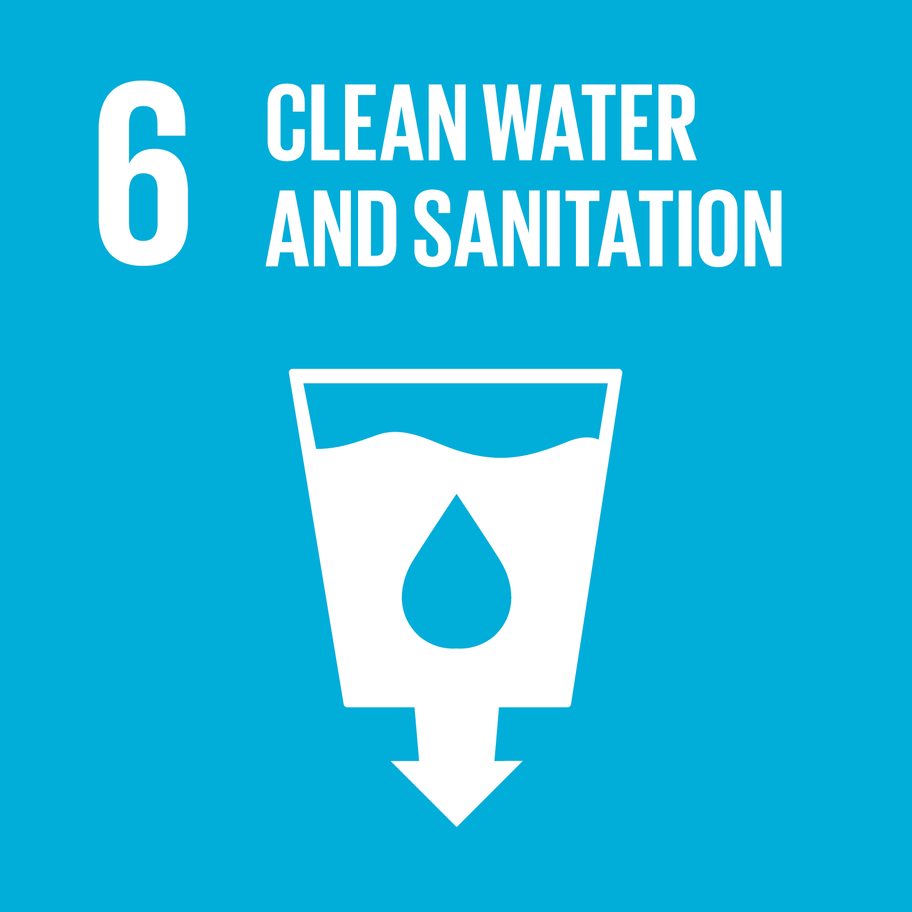
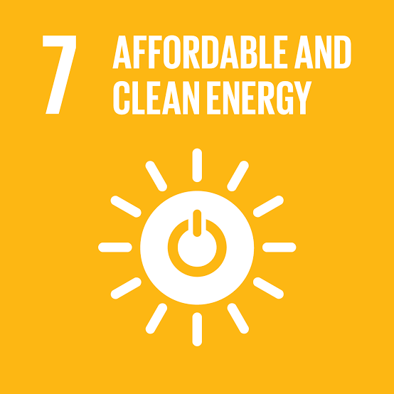
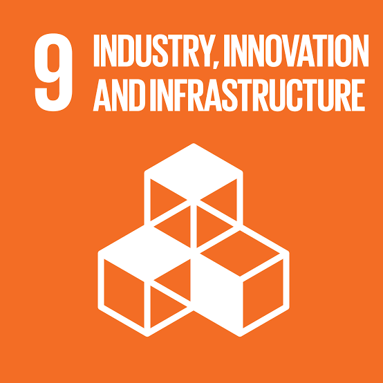
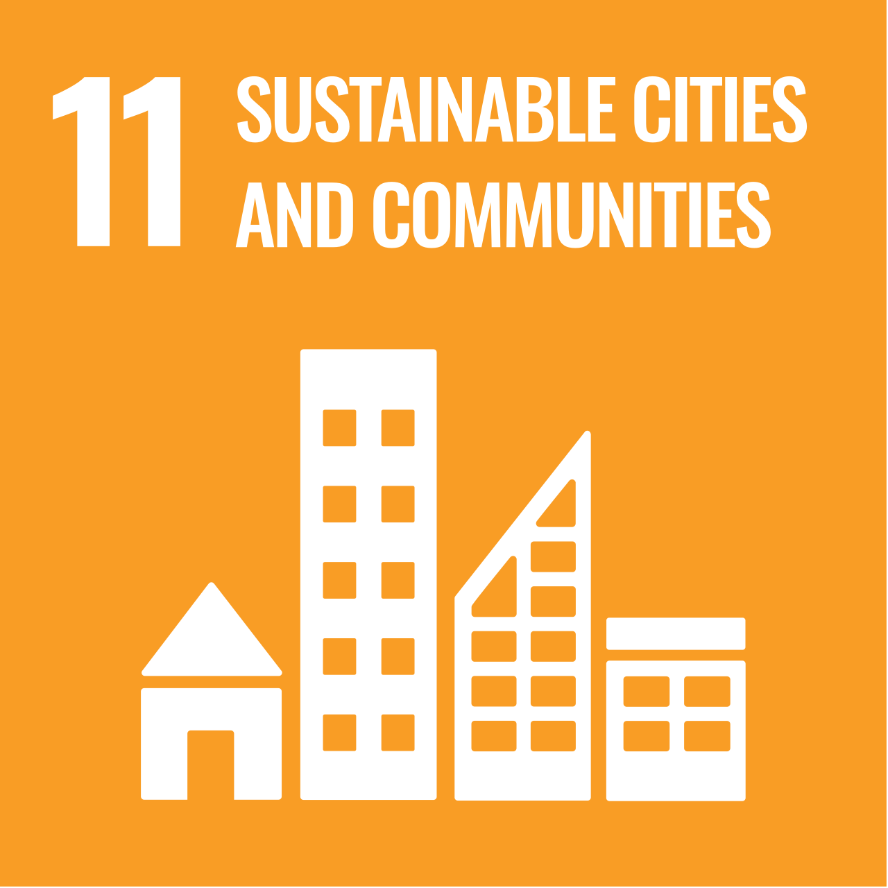
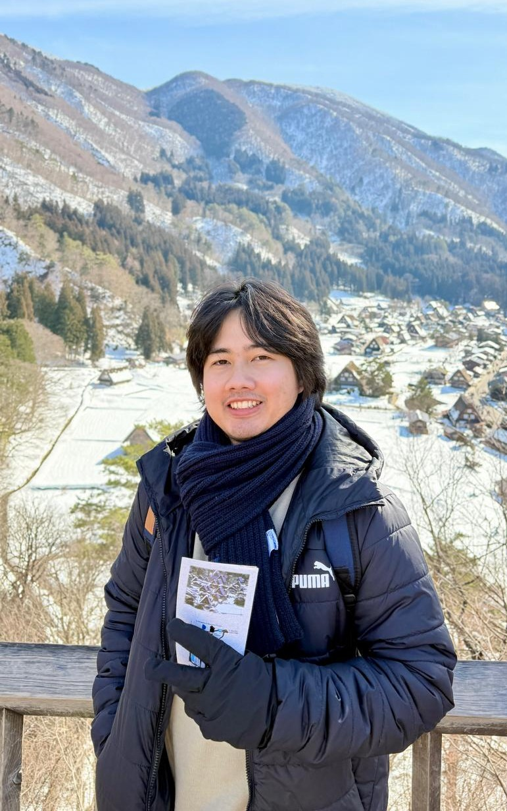

6
Clean Water
and Sanitation
and Sanitation
Water Resources
Hydrology, rainfall-runoff analysis, watershed modelling, flood assessment, and water-system planning.
Our expertise is aligned with selected Sustainable Development Goals by supporting clean water systems, renewable energy development, resilient infrastructure, safer communities, and climate adaptation.

Hydrology, rainfall-runoff analysis, watershed modelling, flood assessment, and water-system planning.

Hydropower support, pumped-storage assessment, wind-flow analysis, and wind energy site support.

Hydraulic modelling for rivers, dams, spillways, drainage, scouring, sediment movement, and engineering structures.

Flood risk analysis, coastal inundation, tsunami-related modelling, and hazard assessment for safer living environments.

Climate risk analysis, extreme rainfall assessment, flood response studies, and adaptation-oriented technical support.
Water, sediment, climate, and environmental flow processes strongly influence infrastructure safety, disaster risk, and sustainable development. Through research-based modelling and technical analysis, EFSRG supports better planning and decision-making for water and environmental systems.
An exhilarating knowledge-sharing session with participants from diverse countries! Exchanging ideas and experiences broadened my perspective, challenged the way I think, and highlighted the value of learning from different cultures and backgrounds. Truly an inspiring and encouraging experience.


General CFD Expert
CFD for Piping Expert

Hydrology & Climate Change Expert
Hydraulic and Flood Modeling Expert